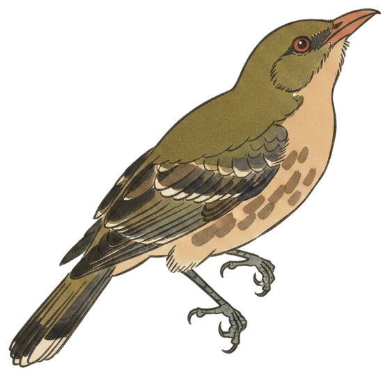

Record day
Olive-backed Oriole has its busiest day yet
Four calls in the 24 hours to 8:30 am today made yesterday a record day for the Olive-backed Oriole, and 13 species were heard in all across Canberra.

The Olive-backed Oriole was heard four times yesterday, all of them within a single minute in the early afternoon. The first call came at 1:58 pm and the last at 1:59 pm.
It is the busiest day yet for the species at the station, where it has now been heard on 4 of the 46 days the station has been listening. The previous best was 2 calls in a day.
The bird is a summer migrant to the Canberra region, most often recorded in October, November and December, and is described as moderately common around Canberra.
- Calls
- 4
- First heard
- Sat 1:58 pm
- Best call
- 97%
- Days heard
- 4 of 46